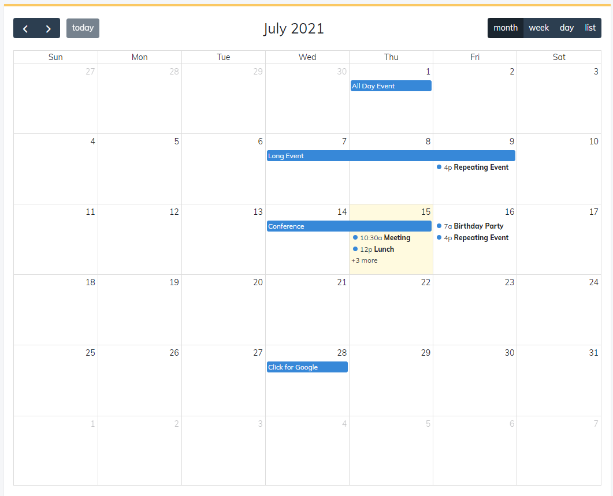

[Javascript ] WebのFull calendar(スケジュールカレンダー)の使い方法
こんにちは。明月です。
この投稿はWebのFull calendar(スケジュールカレンダー)の使い方法に関する説明です。
我々がWebプログラミングを作成したら普通はYahooみたいなポータルサイトより会社や様々なグループなどで使うコミュニティサイトやスケジュール管理サイトを作成することが多いと思います。
そのプロジェクトの中で一番よく使うプレームワークライブラリはWYSIWYGエディタでウェブ環境でメモ帳みたいに使うエディタ機能だと思います。その以外は多分スケジュール管理するカレンダープレームワークではないかと思います。
カレンダープレームワークに関しても様々なプレームワークがありますが、個人的にfull-calendarというライブラリが一番使いやすいではないかと紹介しようと思います。
リンク - https://fullcalendar.io/

一応fullcalendarを使うために該当なJavascriptとスタイルシート(css)をダウンロードして使ってもよいですが、ウェブ環境の性能のため、CDNリンクを使うほうをお勧めします。
ダウンロードリンク - https://fullcalendar.io/docs/initialize-globals
CDNリンク - https://www.jsdelivr.com/package/npm/fullcalendar
<!DOCTYPE html>
<html>
<head>
<meta charset='utf-8' />
<!-- 画面解像度により文字サイズを対応(モバイル対応) -->
<meta name="viewport" content="width=device-width,initial-scale=1.0,minimum-scale=1.0,maximum-scale=1.0,user-scalable=no">
<!-- jquery CDN -->
<script src="https://code.jquery.com/jquery-3.6.0.min.js"></script>
<!-- fullcalendar CDN -->
<link href='https://cdn.jsdelivr.net/npm/fullcalendar@5.8.0/main.min.css' rel='stylesheet' />
<script src='https://cdn.jsdelivr.net/npm/fullcalendar@5.8.0/main.min.js'></script>
<!-- fullcalendar 言語 CDN -->
<script src='https://cdn.jsdelivr.net/npm/fullcalendar@5.8.0/locales-all.min.js'></script>
<style>
/* bodyスタイル */
html, body {
overflow: hidden;
font-family: Arial, Helvetica Neue, Helvetica, sans-serif;
font-size: 14px;
}
/* カレンダーのヘッダースタイル(年月がある部分) */
.fc-header-toolbar {
padding-top: 1em;
padding-left: 1em;
padding-right: 1em;
}
</style>
</head>
<body style="padding:30px;">
<!-- calendarタグ -->
<div id='calendar-container'>
<div id='calendar'></div>
</div>
<script>
(function(){
$(function(){
// calendarエレメント取得
var calendarEl = $('#calendar')[0];
// full-calendar生成する。
var calendar = new FullCalendar.Calendar(calendarEl, {
height: '700px', // calendarの高さ設定
expandRows: true, // 画面に合わせて高さを再設定
slotMinTime: '08:00', // Dayカレンダーに開始時間
slotMaxTime: '20:00', // Dayカレンダーに終了時間
// ヘッダーに表示するツールバー
headerToolbar: {
left: 'prev,next today',
center: 'title',
right: 'dayGridMonth,timeGridWeek,timeGridDay,listWeek'
},
initialView: 'dayGridMonth', // 初期ロードする時、見えるカレンダーの画面(基本設定:月)
initialDate: '2021-07-15', // 初期日付設定(設定しなければ基本的に本日の日付で設定)
navLinks: true, // 日付を選択するとDayカレンダーやWeekカレンダーにリンク
editable: true, // 修正可能
selectable: true, // カレンダーのドラッグ設定可能
nowIndicator: true, // 現在時間マーク
dayMaxEvents: true, // イベントの数がオバーすると高さの制限(+のマークと何個式で表現)
locale: 'ja', // 日本語設定
eventAdd: function(obj) { // イベントが追加すると発生するイベント
console.log(obj);
},
eventChange: function(obj) { // イベントが修正されたら発生するイベント
console.log(obj);
},
eventRemove: function(obj){ // イベントが削除すると発生するイベント
console.log(obj);
},
select: function(arg) { // カレンダーでドラックでイベントを生成することが可能。
var title = prompt('Event Title:');
if (title) {
calendar.addEvent({
title: title,
start: arg.start,
end: arg.end,
allDay: arg.allDay
})
}
calendar.unselect()
}
// イベント
events: [
{
title: 'All Day Event',
start: '2021-07-01',
},
{
title: 'Long Event',
start: '2021-07-07',
end: '2021-07-10'
},
{
groupId: 999,
title: 'Repeating Event',
start: '2021-07-09T16:00:00'
},
{
groupId: 999,
title: 'Repeating Event',
start: '2021-07-16T16:00:00'
},
{
title: 'Conference',
start: '2021-07-11',
end: '2021-07-13'
},
{
title: 'Meeting',
start: '2021-07-12T10:30:00',
end: '2021-07-12T12:30:00'
},
{
title: 'Lunch',
start: '2021-07-12T12:00:00'
},
{
title: 'Meeting',
start: '2021-07-12T14:30:00'
},
{
title: 'Happy Hour',
start: '2021-07-12T17:30:00'
},
{
title: 'Dinner',
start: '2021-07-12T20:00:00'
},
{
title: 'Birthday Party',
start: '2021-07-13T07:00:00'
},
{
title: 'Click for Google',
url: 'http://google.com/', // クリック時に当該なURLに移動
start: '2021-07-28'
}
]
});
// カレンダーレンダリング
calendar.render();
});
})();
</script>
</body>
</html>
上の例でカレンダーにマウスでドラックしてイベントを追加することができるし、リンクを通ってページ移動、日付をクリックしてカレンダーが移動することなどをテストすることができます。
私はイベントデータを配列式で設定して固定値になりましたが、ajaxで動的にデータを取得することもできます。
リンク - https://fullcalendar.io/docs/events-json-feed
その以外にドラック形式のアイテムボックスを生成してイベントをドラックしてカレンダーに設定することが可能なカレンダーも作成することができます。
<!DOCTYPE html>
<html>
<head>
<meta charset='utf-8' />
<!-- 画面解像度により文字サイズを対応(モバイル対応) -->
<meta name="viewport" content="width=device-width,initial-scale=1.0,minimum-scale=1.0,maximum-scale=1.0,user-scalable=no">
<!-- jquery CDN -->
<script src="https://code.jquery.com/jquery-3.6.0.min.js"></script>
<!-- fullcalendar CDN -->
<link href='https://cdn.jsdelivr.net/npm/fullcalendar@5.8.0/main.min.css' rel='stylesheet' />
<script src='https://cdn.jsdelivr.net/npm/fullcalendar@5.8.0/main.min.js'></script>
<!-- fullcalendar 言語 CDN -->
<script src='https://cdn.jsdelivr.net/npm/fullcalendar@5.8.0/locales-all.min.js'></script>
<style>
/* bodyスタイル */
body {
margin-top: 40px;
font-size: 14px;
font-family: Arial, Helvetica Neue, Helvetica, sans-serif;
}
/* ドラックボックスのスタイル */
#external-events {
position: fixed;
left: 20px;
top: 20px;
width: 100px;
padding: 0 10px;
border: 1px solid #ccc;
background: #eee;
text-align: left;
}
/* ドラックボックスのスタイルのタイトル */
#external-events h4 {
font-size: 16px;
margin-top: 0;
padding-top: 1em;
}
#external-events .fc-event {
margin: 3px 0;
cursor: move;
}
#external-events p {
margin: 1.5em 0;
font-size: 11px;
color: #666;
}
#external-events p input {
margin: 0;
vertical-align: middle;
}
#calendar-wrap {
margin-left: 200px;
}
#calendar1 {
max-width: 1100px;
margin: 0 auto;
}
</style>
</head>
<body>
<div id='wrap'>
<!-- ドラックボックス -->
<div id='external-events'>
<h4>Draggable Events</h4>
<div id='external-events-list'></div>
</div>
<!-- calendarタグ -->
<div id='calendar-wrap'>
<div id='calendar1'></div>
</div>
</div>
<script>
(function(){
$(function(){
// ドラックボックスのエレメントを取得
var containerEl = $('#external-events-list')[0];
// ドラックボックスを生成する。
new FullCalendar.Draggable(containerEl, {
itemSelector: '.fc-event',
eventData: function(eventEl) {
return {
title: eventEl.innerText.trim()
}
}
});
// ドラックイベントを追加
for(var i=1; i<=5;i++) {
var $div = $("<div class='fc-event fc-h-event fc-daygrid-event fc-daygrid-block-event'></div>");
$event = $("<div class='fc-event-main'></div>").text("Event "+i);
$('#external-events-list').append($div.append($event));
}
// calendarエレメント取得
var calendarEl = $('#calendar1')[0];
// full-calendar生成する。
var calendar = new FullCalendar.Calendar(calendarEl, {
// ヘッダーに表示するツールバー
headerToolbar: {
left: 'prev,next today',
center: 'title',
right: 'dayGridMonth,timeGridWeek,timeGridDay,listWeek'
},
initialDate: '2021-07-15', // 初期日付設定(設定しなければ基本的に本日の日付で設定)
locale: 'ja', // 日本語設定
editable: true, // 修正可能
droppable: true, // ドラック可能
drop: function(arg) { // ドラッグアンドドロップが成功する場合
// ドラックボックスでイベントを削除する。
arg.draggedEl.parentNode.removeChild(arg.draggedEl);
}
});
// カレンダーレンダリング
calendar.render();
});
})();
</script>
</body>
</html>
Draggable Events
上の例で左にドラックボックスからカレンダーにイベントをドラックアンドドロップが可能です。(モバイルの場合は1秒以上にイベントを押下するとドラックアンドドロップが可能です。)
をドラックアンドドロップは別にajaxで追加するAPIがないので、動的に生成するコードを作成しなければならないです。私の場合はfor文で5個生成しました。
リンク - https://fullcalendar.io/docs/external-dragging
そしてfullcalendarには有料バージョンのtimelineカレンダーもあります。
<!DOCTYPE html>
<html>
<head>
<meta charset='utf-8' />
<style>
/* bodyスタイル */
html, body {
margin: 0;
padding: 0;
font-family: Arial, Helvetica Neue, Helvetica, sans-serif;
font-size: 14px;
}
#calendar2 {
max-width: 1100px;
margin: 40px auto;
}
</style>
<script src="https://code.jquery.com/jquery-3.6.0.min.js"></script>
<link href='https://cdn.jsdelivr.net/npm/fullcalendar@5.8.0/main.min.css' rel='stylesheet' />
<script src='https://cdn.jsdelivr.net/npm/fullcalendar@5.8.0/main.min.js'></script>
<script src='https://cdn.jsdelivr.net/npm/fullcalendar@5.8.0/locales-all.min.js'></script>
</head>
<body>
<div id='calendar2'></div>
<script>
(function(){
$(function(){
// calendarエレメント取得
var calendarEl = $('#calendar2')[0];
// full-calendar生成する。
var calendar = new FullCalendar.Calendar(calendarEl, {
timeZone: 'UTC', // タイムゾーン設定
initialView: 'resourceTimelineDay', // 初期ロードする時、見えるカレンダーの画面(基本設定:月)
aspectRatio: 1.5, // 幅を満たすブロック要素
// ヘッダーに表示するツールバー
headerToolbar: {
left: 'prev,next',
center: 'title',
right: 'resourceTimelineDay,resourceTimelineWeek,resourceTimelineMonth'
},
editable: true, // 修正可能
resourceAreaHeaderContent: 'Rooms',
initialDate: '2021-07-15', // 初期日付設定(設定しなければ基本的に本日の日付で設定)
height: '320px', // 高さ設定
locale: 'ja', // 日本語設定
// タイムラインで左のリソース設定(この部分もajaxで設定することが可能。)
resources: [
{"id":"a","title":"Auditorium A"},
{"id":"b","title":"Auditorium B","eventColor":"green"},
{"id":"c","title":"Auditorium C","eventColor":"orange"},
{"id":"d","title":"Auditorium D","children":[
{"id":"d1","title":"Room D1"},
{"id":"d2","title":"Room D2"}]
}
],
// イベント
events: [
{"resourceId":"a","title":"event 1","start":"2021-07-14","end":"2021-07-16"},
{"resourceId":"b","title":"event 3","start":"2021-07-15T12:00:00+00:00","end":"2021-07-16T06:00:00+00:00"},
{"resourceId":"d1","title":"event 4","start":"2021-07-15T07:30:00+00:00","end":"2021-07-15T09:30:00+00:00"}
]
});
// カレンダーレンダリング
calendar.render();
});
})();
</script>
</body>
</html>
上のソースは一般カレンダーではなく、横になっているタイムラインのカレンダーです。
時間関係なスケジューラプログラムを作成する時にいいと思います。
参考に上のソースは有料ライセンスが必要なモジュールです。必要ならFullCalendarでライセンスを購買してから使ったらよいです。
私が良く使うAPIは例で説明しましたが、その以外のAPIを使いたいならAPIドキュメントを確認すればよいと思います。
リンク - https://fullcalendar.io/docs#toc
ここまでWebのFull calendar(スケジュールカレンダー)の使い方法に関する説明でした。
ご不明なところや間違いところがあればコメントしてください。
- [Javascript ] WebのFull calendar(スケジュールカレンダー)の使い方法2021/07/15 21:35:36
- [Design pattern] 1-5. プロトタイプパターン(Prototype pattern)2021/10/22 19:35:45
- [Project design] プログラム検証とテスト - Unitテスト2021/10/22 19:34:09
- [C#] 57. コーティング規約2021/10/21 18:57:02
- [C#] 56. 値の初期化及び基本データ値(default)を設定する方法、そして原始データのnull処理、?と??の使い方2021/10/21 18:54:41
- [C#] 55.namespaceとusing、そしてpartialの使い方2021/10/21 18:51:39
- [C#] 54. Reflection機能を使い方 - Attribute2021/10/20 19:29:31
- [Project design] プログラム制作(コーディング) - クラス作成方法2021/10/20 19:28:09
- [C#] 53. Reflection機能を使い方 - Propertyとevent2021/10/19 21:02:58
- [Project design] プログラム制作(コーディング) - 関数作成方法2021/10/19 21:01:32
- [CentOs] ジェンキンス(Jenkins)をインストールする方法2021/10/18 18:28:58
- [Project design] 詳細設計(インターフェース設計と抽象化作業)2021/10/18 18:23:15
- [Project design] 基本設計(画面設計とDB設計)2021/10/17 21:21:11
- [Design pattern] 1-4. デザインパターンの抽象ファクトリーパターン(Abstract factory pattern)2021/10/15 19:31:03
- [Project design] 要件定義(要求事項整理)2021/10/15 19:28:58
- [C#] 52. Reflection機能を使い方 - Variable2021/10/15 19:27:37